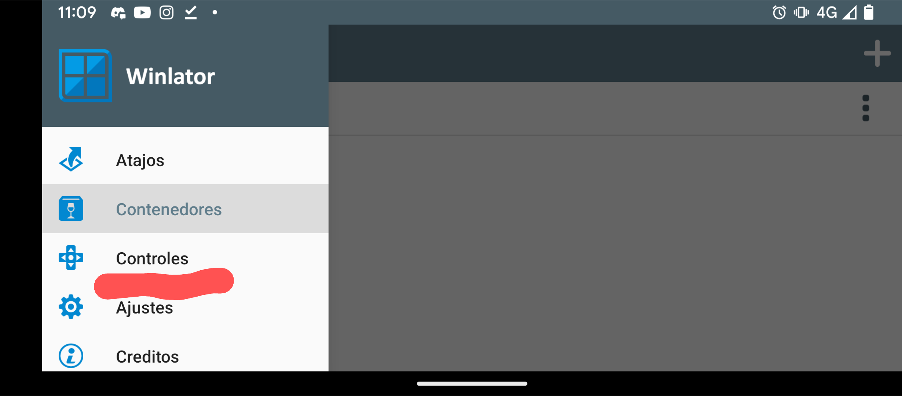
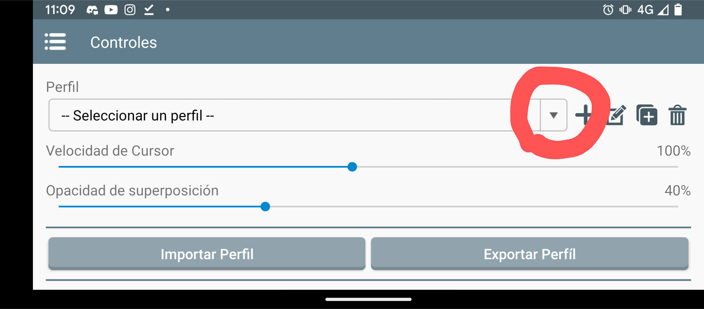
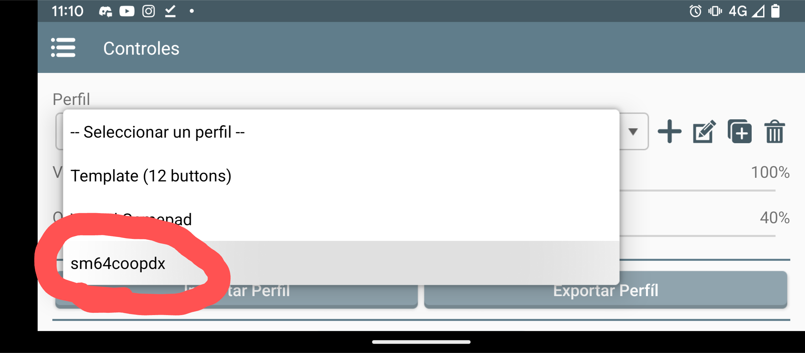

- Ve a
Descargar sm64coopdx OpenGL
- Descomprime el archivo en cualquier lugar de tu Almacenamiento interno y adentro añade tu baserom.us.z64 dentro del archivo descomprimido.
- Ejecuta sm64coopdx.exe Dentro del emulador en Español WINLATOR
version 7.1
- Coloca una ROM US de Super Mario 64 al juego (esto es necesario para que el juego obtenga todos los assets).
- ¡Disfruta jugando sm64coopdx!
Nota: coloca la ROM en la carpeta del juego .exe solo es necesario la primera vez que abres el juego (no tienes que hacerlo después de una nueva actualización).

Si tienes alguna pregunta (cómo instalar mods, host, unirse...) por favor consulta:
PASOS: pulsa la flecha de la imagen para ver cada paso
Nota: este winlator ya viene con los controles y ajustes configurados para sm64coopdx
  